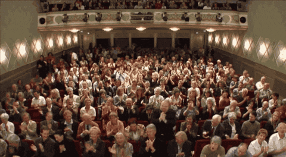

Pregunta 1 de 9

¡Ups! Esa no era…
Pero tranqui, tenés otra oportunidad para acertar esta pregunta.

¡Correcto! 🎯
¡Muy bien! Siguiente pregunta...
¡GANASTE UNA PLAY 5!
🎉 🕹️ 🎊 🎮 🎉
Respondiste todas las preguntas correctamente.
¡Sos un crack de las apuestas online!